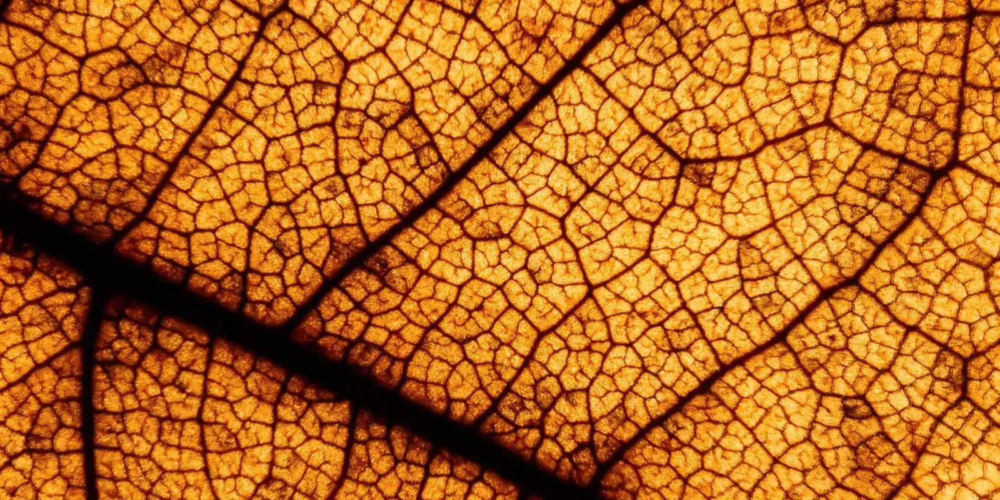

Eco doppler venoso: qué es y por qué es clave
Si te mandaron un eco doppler venoso o simplemente quieres entender mejor tu circulación, aquí te contamos en qué consiste este examen, cómo se hace y qué información le da a tu médico. Es una prueba sencilla e indolora, y hoy es clave para cuidar la salud de tus piernas.

Si tu médico te ha pedido un eco doppler venoso o estás por agendar uno, es normal tener preguntas: qué es, si duele y qué tan útil es en realidad. La buena noticia es que se trata de un examen sencillo, indoloro y sin radiación, que hoy es la herramienta más confiable para ver cómo circula la sangre en tus piernas.
¿Qué es el eco doppler venoso?
El nombre junta dos partes. "Eco" viene de ecografía: usa ondas de sonido para formar una imagen de tus venas, igual que una ecografía de embarazo, pero aplicada a los vasos sanguíneos. "Doppler" es la parte que mide movimiento: capta cómo se desplaza la sangre dentro de la vena, en qué dirección va y a qué velocidad. Cuando se combinan las dos técnicas, obtienes una sola imagen que muestra la estructura de la vena y, al mismo tiempo, cómo fluye la sangre por dentro.
No usa radiación ni agujas: el técnico o el médico pasa un transductor —un dispositivo de mano— sobre la piel, previamente cubierta con un gel conductor, y en la pantalla ves la imagen en tiempo real.
¿Para qué sirve y qué puede detectar?
Hoy en día, es el estudio de referencia para evaluar el sistema venoso de tus piernas. Sirve para confirmar o descartar varias situaciones que suelen dar síntomas parecidos entre sí, como pesadez, hinchazón o venas visibles:
- Insuficiencia venosa y reflujo: permite ver si las válvulas de las venas siguen cerrando bien o si dejan que la sangre se devuelva (reflujo), que es la causa más frecuente de várices y piernas pesadas.
- Trombosis venosa profunda: detecta coágulos dentro de las venas profundas, una condición que requiere atención médica pronta.
- Mapeo antes de un tratamiento: si ya tienes várices, el eco doppler muestra qué venas están afectadas y en qué grado, información clave para decidir el tratamiento más adecuado.
- Seguimiento: ayuda a controlar cómo evoluciona una condición venosa ya diagnosticada, o el resultado de un procedimiento previo.
En otras palabras: no diagnostica "a simple vista", sino que confirma con datos objetivos qué está pasando dentro de la vena, algo que a veces no se puede saber solo mirando o palpando la pierna.
¿Cómo se hace el examen?
El procedimiento es tranquilo y no requiere anestesia:
- Te acuestas (o a veces te pones de pie, según lo que se quiera evaluar) en una camilla.
- El profesional aplica un gel sobre la piel de la pierna.
- Desliza el transductor por distintos segmentos de la vena, a veces presionando suavemente para valorar cómo responde el flujo.
- En algunos casos te pedirá toser o hacer una pequeña maniobra de pujo, porque eso ayuda a poner en evidencia el reflujo si existe.
Es indoloro, no deja marcas ni requiere recuperación: en cuanto termina, puedes seguir con tu día con normalidad. La duración varía de una persona a otra, según cuántos segmentos venosos haya que revisar. Tampoco exige una preparación especial: puedes comer como siempre y solo conviene llevar ropa cómoda que permita descubrir la zona que se va a examinar.
¿Cuándo conviene hacerte este examen?
Tu médico puede recomendarlo si notas:
- Piernas pesadas, cansadas o hinchadas, sobre todo al final del día.
- Várices visibles o venas que han ido apareciendo con el tiempo.
- Calambres nocturnos o picazón sobre el trayecto de una vena.
- Hinchazón repentina de una sola pierna, con o sin dolor (aquí conviene no esperar).
- Antes de considerar cualquier procedimiento para tratar várices o insuficiencia venosa.
El examen no trata nada por sí mismo: es la "hoja de ruta" que le permite a tu médico entender qué está pasando en tus venas antes de decidir el paso siguiente.
Un examen, muchas respuestas
Vale la pena aclarar algo importante: este es un estudio diagnóstico, no un tratamiento. No "cura" las várices ni la insuficiencia venosa, pero sí es la base sobre la que se construye cualquier decisión clínica seria en salud vascular. Sin ese mapa claro de cómo circula la sangre, cualquier tratamiento sería, en el fondo, una suposición.
Por eso, en Seravena, cuando valoramos a una persona con piernas pesadas o várices, el eco doppler venoso suele estar entre los primeros pasos: nos permite ver qué está pasando en cada tramo de la vena antes de conversar contigo sobre las opciones disponibles, sin adelantarnos ni asumir nada.
Si llevas tiempo conviviendo con piernas pesadas, hinchadas o con várices, y todavía no te has hecho este examen, puede ser el primer paso para entender qué está pasando realmente y qué opciones tienes. Un buen diagnóstico no solo aclara dudas: también da tranquilidad.
Preguntas frecuentes
¿Qué es un eco doppler venoso?
Combina dos técnicas. La ecografía usa ondas de sonido para formar una imagen de tus venas, y el doppler mide el movimiento: capta cómo se desplaza la sangre dentro de la vena, en qué dirección va y a qué velocidad.
¿Duele el eco doppler venoso?
No. El procedimiento es tranquilo y no requiere anestesia: te acuestas o te pones de pie en una camilla, el profesional aplica un gel sobre la piel de la pierna y desliza el transductor por distintos segmentos de la vena, a veces presionando suavemente.
¿Para qué sirve el eco doppler venoso?
Es el estudio de referencia para evaluar el sistema venoso de las piernas. Permite ver si las válvulas siguen cerrando bien o si dejan que la sangre se devuelva (reflujo), que es la causa más frecuente de várices y piernas pesadas. Es un estudio diagnóstico, no un tratamiento.